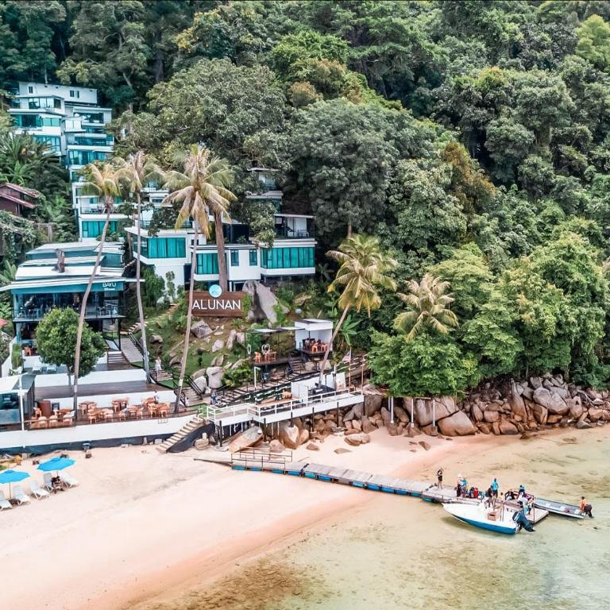
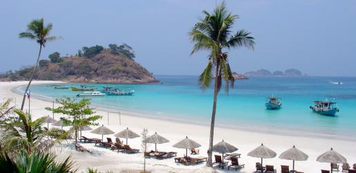
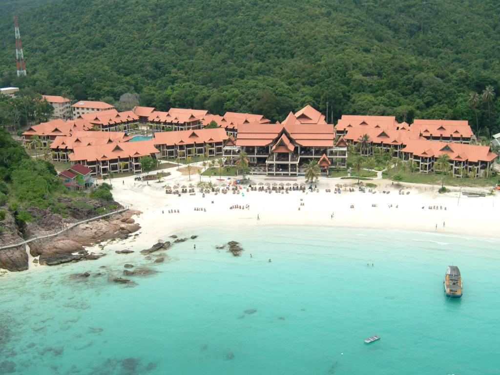
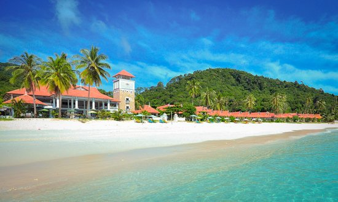

<!DOCTYPE html>
<html>
<head>
	<title>Visit trg</title>
	<link rel= "stylesheet" href="style.css">
</head>

<html>
<head>
<style> 
body {
  background-image: url("sea.jpg");
  background-color: #cccccc;
  
}

</style>
</head>
</body>
</html>


<body>
<center><h1>Let's Visit Kuala Terengganu</center></h1>

<center>
<font face="algerian" size= "75px" color= "black">'The Best Place To Stay In Kuala Terengganu' 
</center></font>
<hr>	
<br>
<center>
<h2>Alunan Resort Perhentian Island</h2>

<p>There are only a handful of hotels & resorts at Pulau Perhentian Kecil, and Alunan Resort is arguably the best resort on the island. <br>It is a pretty small island and Alunan Resort is on the quiet side of the island.<center> 
<br>
<hr>
<p>Getting to Pulau Perhentian Kecil involves some challenges for first timers. Get yourself to Kuala Besut jetty, park your car, ride a boat, and voila! You will find yourself on an unspoiled island surrounded by pristine beach. 
</p>
<hr>
<br>

<center>
<h2>Pulau Redang Resort</h2>

<p>Located right on the beach, Redang Beach Resort is where you can put on your shades, stretch out your legs and let the sun and breeze embrace you. The direct access to beach also means you can (almost) catch the wave you see coming from your room’s window!
</p>
<hr>
<br>

<h2>Laguna Redang Island Resort</h2>

<p>Some of you might recognize this place from the Hong Kong film “Summer Holiday”, starring the popular Richie Ren and Sammi Cheng. Laguna Redang Island Resort sits along the shore of one of Redang Island’s best beaches and boasts of grand traditional Malay architecture with a contemporary touch. It’s no wonder why this resort was picked to be the filming location!
</p>
<hr>
<br>

<h2>Sari Pacifica Beach Resort & Spa</h2>

<p>Leave your problems behind and de-stress at the sunny Sari Pacifica Beach Resort & Spa. Set right by the white sandy beach with the lush green forest as the backdrop, this resort is a paradise for those who wish to escape the hectic city for a while.


<hr><center>
<a href="index.html" "title="click this button to My Homepage">My Homepage</a>
<a href="about.html" "title="click this button to About">Attraction</a>
<a href="gallery.html" "title="click this button to Best Place to Stay">Best Place to Stay</a>
<a href="food.html" "title="click this button to Foodie">Foodie</a>
<a href="best.html" "title="click this button to The Best Spot">The Best Spot</a>
<a href="contact me.html" "title="click this button to Contact Me">Contact Me</a>

</body>
</html>


